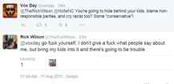
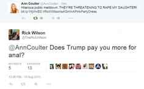

< < < Back
Cuckservative Rick Wilson Melts Down In Response To Donald Trump Candidacy – Return Of Kings
With the ascent of Republican presidential nominee Donald Trump showing no signs of abating, cuckservatives across the U.S. are losing their minds, and the GOP cucksultant leading the crybaby parade is Rick Wilson. This week, Wilson published an article at The Daily Beast decrying the rise of the “Troll Party,” his halfwit neologism for Trump supporters and anyone else who thinks conservatives should be, you know, conservative:
That’s what is happening inside the GOP, and why the disease vector, in the form of Donald Trump, puts the entire conservative movement at risk of being hijacked and destroyed by a bellowing billionaire with poor impulse control and a profoundly superficial understanding of the world. The Troll Party puts nationalist, anti-establishment bluster before the tenets of our constitutional republic.
Wilson’s temper tantrum is just the latest in a series of embarrassing meltdowns for both him and the cuck brigade of the conservative movement. Cuckservatives like Wilson claim to support right-wing values, yet now that we have a viable presidential candidate actually espousing those positions, they’re scattering like roaches baking in the sun. It’s clear that these Beltway “conservatives” are more concerned about staying on the cocktail party circuit then actually winning the war of ideas.
A Brief History Of Public Cucking
https://twitter.com/Ricky_Vaughn99/status/642043343355158529
No one man better exemplifies the word “cuckservative” better than Rick Wilson. A political consultant with a long history of sniping at conservatives he believes are too “extreme,” Wilson has had several major meltdowns over the summer. For example, in a move that not even social justice warriors or other professional victims have yet to stoop to, Wilson used a supposed “rape threat” against his daughter to attack Breitbart. This came after he went on CNN, a notoriously left-wing news network, and called Trump supporters “low-information voters”:

Wilson was later forced to recant his accusation after he was rightfully questioned for not reporting the threat to the police.
Despite getting collectively spanked by the Internet for this idiocy, Wilson chose to dig himself in deeper when he insulted conservative commentator Ann Coulter by asking her if Trump paid her for anal sex. This was in response to Coulter Tweeting out a link to the above-linked Breitbart article on Wilson’s false rape blustering:

Once again, Wilson was forced to back down and issue an apology for his big mouth, though he noticeably didn’t apologize to Coulter, the woman he accused of being a prostitute.
Wilson’s opposition to Trump is so extreme—CNN dubbed him Trump’s “hardcore hater“—that he’s actively encouraging other GOP candidates to spurn Trump’s supporters. In appearances on CNN and in articles such as the aforementioned Daily Beast piece, Wilson has repeatedly insulted Trump supporters, calling them “trolls” and “kooks” and claiming that any Republican candidate who tries to appeal to them is “racist” or “xenophobic.”
The joke is that Donald Trump is not only leading the Republican presidential field by wide margins over his competitors, his candidacy has injected a vitality into conservative politics that hasn’t been seen in decades. After eight years of the faux-conservative George W. Bush and lackluster candidate selections in 2008 and 2012, Trump has both the charisma and the platform necessary to take the White House back from the radical left.
None of this matters to Rick Wilson; he’d rather the GOP lose “honorably” then resort to the winning playbook that Trump is using.
The GOP’s Heart Of Cuckness
https://twitter.com/Ricky_Vaughn99/status/641057721966567424
The continuing crackup over Donald Trump’s campaign has revealed the true priorities of Beltway conservatives such as Rick Wilson, George Will and Jonah Goldberg. Despite claiming to fight for traditional values, these cuckservatives overwhelmingly hail from liberal metropolises, write for left-wing organs such as the Washington Post or Daily Beast, and count leftists among their circle of cocktail buddies. They are almost entirely disconnected from the reality that average Americans—and average conservatives—face, and their flustered hatred of Trump proves it.
The irony is that a few months ago, Wilson was willing to acknowledge the problem of the GOP being too accommodating to the left. In a piece for the Federalist, Wilson slammed “Acela Republicans” (“Acela” referring to the Northeast, named after the Amtrak route connecting Boston and Washington, D.C.) such as New Jersey Governor Chris Christie for their leftist policies, snobby attitude and open contempt for the party’s right-wing base. Yet when given the perfect candidate to send “Acela Republicans” packing, Wilson gets so worked up he has to reach for the smelling salts.
If Trump’s continued performance in the polls and other candidates such as Ted Cruz adopting his tactics is any indicator, cuckservatives such as Rick Wilson are an endangered species. The question remains whether they’ll peacefully step aside in favor of a right-wing renaissance or try to burn down the GOP to assuage their hurt feelings.
Read More: Donald Trump And The Tyranny Of Feelings